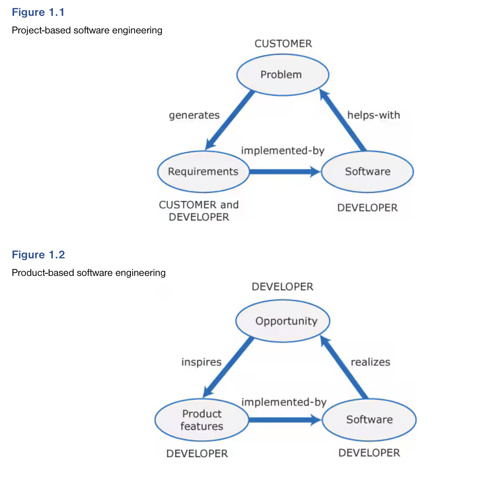
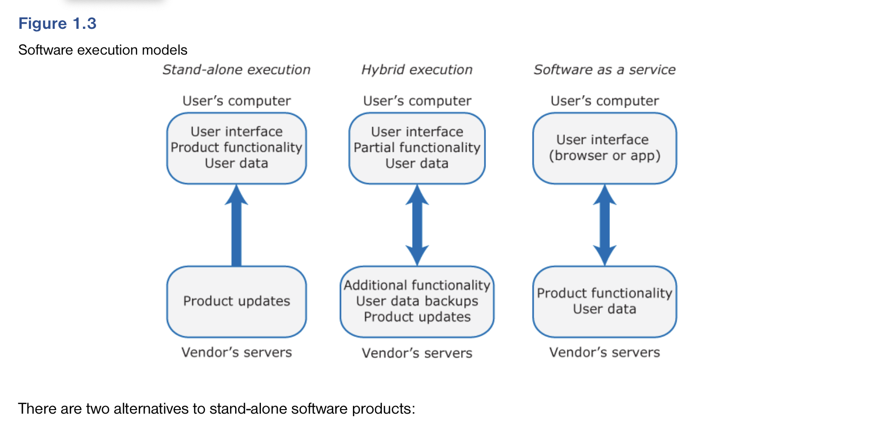

This book introduces software engineering techniques that are used to develop software products. Software products are generic software systems sold to governments, businesses, and consumers. They may be designed to support a business function, such as accounting; they may be productivity tools, such as note-taking systems; or they may be games or personal information systems. Software products range in size from millions of lines of code in large-scale business systems to a few hundred lines of code in a simple app for mobile phones.
We all use software products every day on our computers, tablets, and phones. I am using a software product—the Ulysses editor—to write this book. I’ll use another editing product—Microsoft Word—to format the final version, and I’ll use Dropbox to exchange the files with the publisher. On my phone, I use software products (apps) to read email, read and send tweets, check the weather, and so on.
The engineering techniques that are used for product development have evolved from the software engineering techniques developed in the 20th century to support custom software development. When software engineering emerged as a discipline in the 1970s, virtually all professional software was “one-off,” custom software. Companies and governments wanted to automate their businesses, and they specified what they wanted their software to do. An in-house engineering team or an external software company then developed the software.
Examples of custom software that were developed around that time include:
Software projects were set up to develop these one-off systems, with the software system based on a set of software requirements. The contract between the software customer and the software development company included a requirements document, which was a specification of the software that should be delivered. Customers defined their requirements and worked with the development team to specify, in detail, the software’s functionality and its critical attributes.
This project-based approach dominated the software industry for more than 25 years. The methods and techniques that evolved to support project-based development came to define what was meant by “software engineering.” The fundamental assumption was that successful software engineering required a lot of preparatory work before starting to write programs. For example, it was important to spend time getting the requirements “right” and to draw graphical models of the software. These models were created during the software design process and used to document the software.
As more and more companies automated their business, however, it became clear that most businesses didn’t really need custom software. They could use generic software products that were designed for common business problems. The software product industry developed to meet this need. Project-based software engineering techniques were adapted to software product development.
Project-based techniques are not suited to product development because of fundamental differences between project-based and product-based software engineering. These differences are illustrated in Figures 1.1 and 1.2.
Software projects involve an external client or customer who decides on the functionality of the system and enters into a legal contract with the software development company. The customer’s problem and current processes are used as a basis for creating the software requirements, which specify the software to be implemented. As the business changes, the supporting software has to change. The company using the software decides on and pays for the changes. Software often has a long lifetime, and the costs of changing large systems after delivery usually exceed the initial software development costs.
Software projects involve an external client or customer who decides on the functionality of the system and enters into a legal contract with the software development company. The customer’s problem and current processes are used as a basis for creating the software requirements, which specify the software to be implemented. As the business changes, the supporting software has to change. The company using the software decides on and pays for the changes. Software often has a long lifetime, and the costs of changing large systems after delivery usually exceed the initial software development costs.
As development costs are spread over a much larger customer base, product-based software is usually cheaper, for each customer, than custom software. However, buyers of the software have to adapt their ways of working to the software, since it has not been developed with their specific needs in mind. As the developer rather than the user is in control of changes, there is a risk that the developer will stop supporting the software. Then the product customers will need to find an alternative product
The starting point for product development is an opportunity that a company has identified to create a viable commercial product. This may be an original idea, such as Airbnb’s idea for sharing accommodations; an improvement over existing systems, such as a cloud-based accounting system; or a generalization of a system that was developed for a specific customer, such as an asset management system.
Because the product developer is responsible for identifying the opportunity, they can decide on the features that will be included in the software product. These features are designed to appeal to potential customers so that there is a viable market for the software.
As well as the differences shown in Figures 1.1 and 1.2, there are two other important differences between project-based and product-based software engineering:
Product companies can decide when to change their product or take their product off the market. If a product is not selling well, the company can cut costs by stopping its development. Custom software developed in a software project usually has a long lifetime and has to be supported throughout that lifetime. The customer pays for the support and decides when and if it should end.
For most products, getting the product to customers quickly is critical. Excellent products often fail because an inferior product reaches the market first and customers buy that product. In practice, buyers are reluctant to change products after they have invested time and money in their initial choice.
Bringing the product to the market quickly is important for all types of products, from small-scale mobile apps to enterprise products such as Microsoft Word. This means that engineering techniques geared to rapid software development (agile methods) are universally used for product development. I explain agile methods and their role in product development in Chapter 2.
If you read about software products, you may come across two other terms: “software product lines” and “platforms” (Table 1.1). Software product lines are systems designed to be adaptable to meet the specific needs of customers by changing parts of the source code. Platforms provide a set of features that can be used to create new functionality. However, you always have to work within the constraints defined by the platform suppliers.
Table 1.1
Software product lines and platforms
| Technology | Description |
| Software product line |
A set of software products that share a common core. Each member of the product line includes customer-specific adaptations and additions. Software product lines may be used to implement a custom system for a customer with specific needs that can’t be met by a generic product.For example, a company providing communication software to the emergency services may have a software product line where the core product includes basic communication services such as receive and log calls, initiate an emergency response, pass information to vehicles, and so on. However, each customer may use different radio equipment and their vehicles may be equipped in different ways. The core product has to be adapted for each customer to work with the equipment that they use. |
| Platform |
A software (or software+hardware) product that includes functionality so that new applications can be built on it. An example of a platform that you probably use is Facebook. It provides an extensive set of product functionality but also provides support for creating “Facebook apps.” These add new features that may be used by a business or a Facebook interest group. |
When software products were first developed, they were delivered on a disk and installed by customers on their computers. The software ran on those computers and user data were stored on them. There was no communication between the users’ computers and the vendor’s computers. Now, customers can download products from either an app store or the vendor’s website.
Some products are still based on a stand-alone execution model in which all computation is carried out on the product owner’s computers. However, ubiquitous high-speed networking means that alternative execution models are now available. In these models, the product owner’s computers act as a client, with some or all execution and data storage on the vendor’s servers (Figure 1.3).
As I have said, the key characteristic of product development is that there is no external customer who generates software requirements and pays for the software. This is also true for some other types of software development:
You can use the product development techniques that I explain here for any type of software development that is not driven by external customer requirements.
There is a common view that software product engineering is simply advanced programming and that traditional software engineering is irrelevant. All you need to know is how to use a programming language plus the frameworks and libraries for that language. This is a misconception and I have written this book to explain the activities, apart from programming, that I believe are essential for developing high-quality software products.
If your product is to be a success, you need to think about issues other than programming. You must try to understand what your customers need and how potential users can work with your software. You need to design the overall structure of your software (software architecture) and know about technologies such as cloud computing and security engineering. You need to use professional techniques for verifying and testing your software and code management systems to keep track of a changing codebase.
You also need to think about the business case for your product. You must sell your product to survive. Creating a business case may involve market research, an analysis of competitors, and an understanding of the ways that target customers live and work. This book is about engineering, however, not business, so I don’t cover business and commercial issues here.